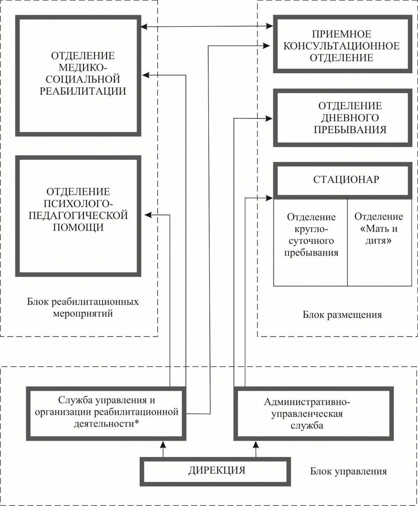
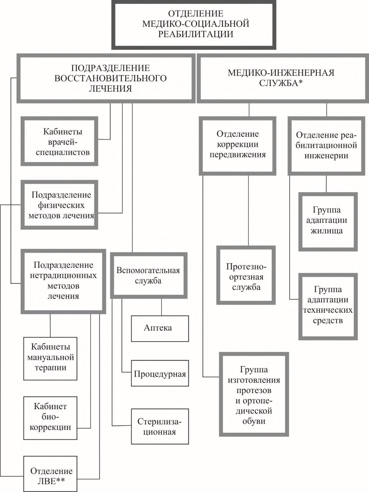
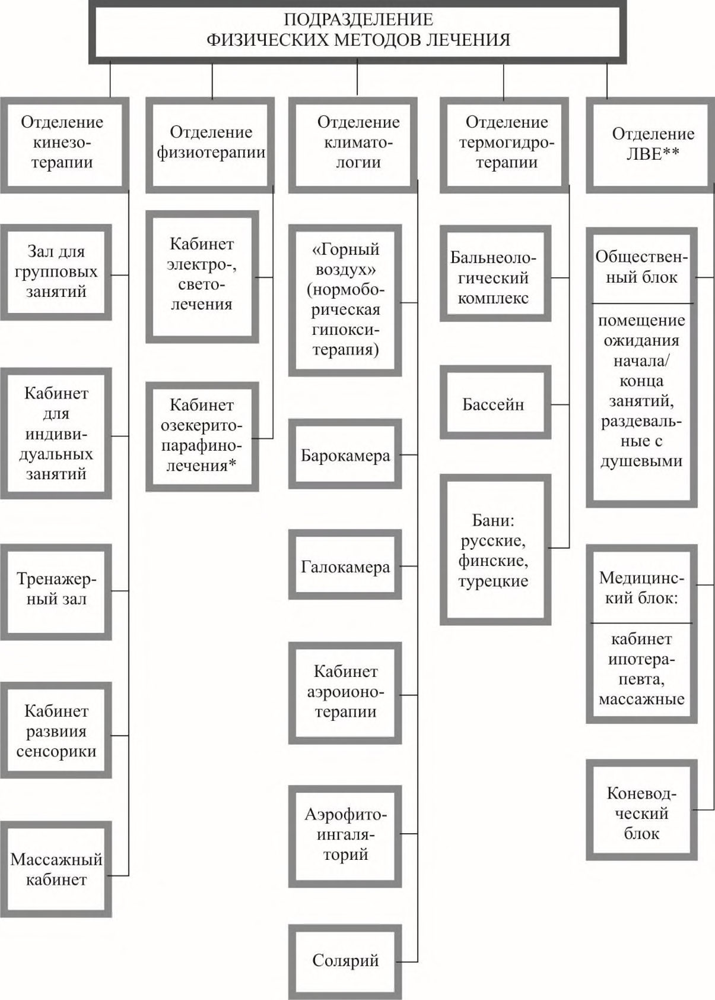
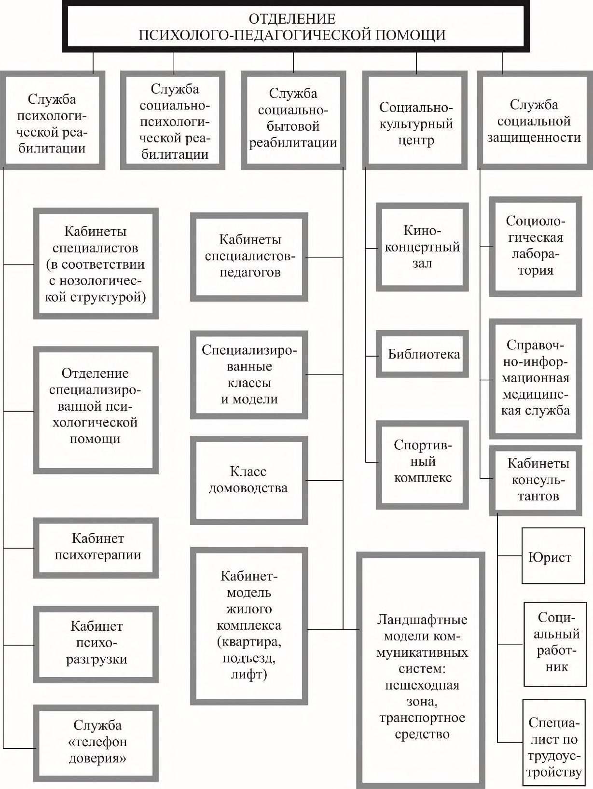
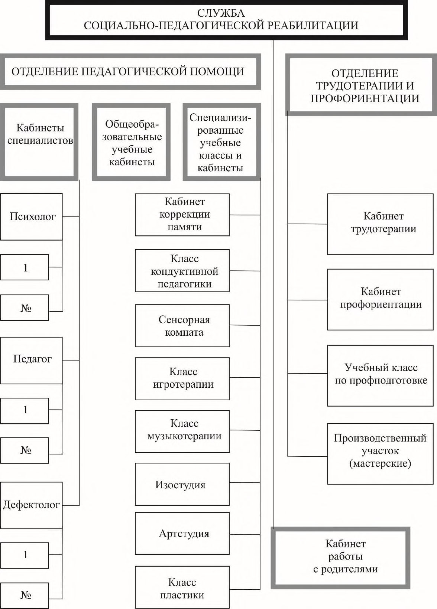
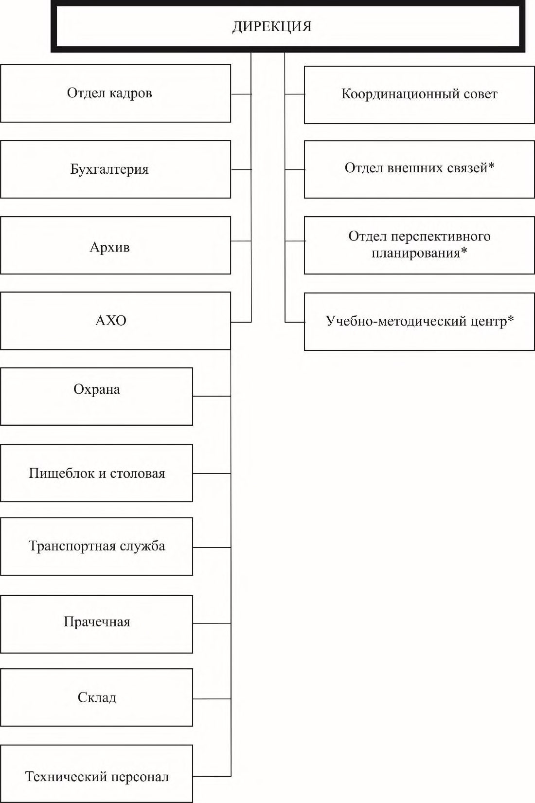

СП 149.13330.2012 «Реабилитационные центры для детей и подростков с ограниченн»
О документе: разработчики, утверждение, регистрация, ключевые слова
СП 149.13330.2012
Издание официальное
Москва 2012
Цели и принципы стандартизации в Российской Федерации установлены Федеральным законом от 27 декабря 2002 г. № 184-ФЗ «О техническом регулировании», а правила разработки -постановлением Правительства Российской Федерации от 19 ноября 2008 г. № 858 «О порядке разработки и утверждения сводов правил».
- 1 ИСПОЛНИТЕЛИ ООО «Институт общественных зданий» и ОАО «ЦНИИЭП жилища»
- 2 ВНЕСЕН Техническим комитетом по стандартизации ТК 465 «Строительство»
- 3 ПОДГОТОВЛЕН к утверждению Управлением градостроительной политики
- 4 УТВЕРЖДЕН приказом Федерального агентства по строительству и жилищнокоммунальному хозяйству (Госстрой) от 27.12.2012 г. № 113/ГС и введен в действие с 1 июля 2013 г.
- 5 ЗАРЕГИСТРИРОВАН Федеральным агентством по техническому регулированию и метрологии (Росстандарт)
- 6 ВВЕДЕН ВПЕРВЫЕ
Информация об изменениях к настоящему своду правил публикуется в ежегодно издаваемом информационном указателе «Национальные стандарты», а текст изменений и поправок - в ежемесячно издаваемых информационных указателях «Национальные стандарты». В случае пересмотра (замены) или отмены настоящего свода правил соответствующее уведомление будет опубликовано в ежемесячно издаваемом информационном указателе «Национальные стандарты». Соответствующая информация, уведомление и тексты размещаются также в информационной системе общего пользования - на официальном сайте Росстандарта в сети Интернет.
Дата введения 2013-07-01
УДК 721.183-056.266 (083.74)
ОКС 01.040.93
ОКП 74.20
Ключевые слова: детский реабилитационный центр, психолого-педагогическая помощь, медико-социальная реабилитация, реабилитация детей-инвалидов, ипотерапия
Введение
Настоящий нормативный документ разработан в соответствии с Федеральным законом от 30 декабря 2009 г. № 384-ФЗ «Технический регламент о безопасности зданий и сооружений», а также в соответствии с принципами Конвенции ООН о правах инвалидов, подписанной Российской Федерацией в сентябре 2008 года.
Настоящий свод правил детализирует требования СП 59.13330 и должен применяться совместно с другими документами в области проектирования и строительства: СП 136.13330, СП 142.13330, СП 145.13330, СП 150.13330 и другие.
В нормативном документе реализованы требования Федерального закона от 29 декабря 2004 г. № 190-ФЗ «Градостроительный кодекс Российской Федерации», Федерального закона от 24 ноября 1995 г. № 181-ФЗ «О социальной защите инвалидов в Российской Федерации», Федерального закона от 27 декабря 2002 г. № 184-ФЗ «О техническом регулировании», Федерального закона от 30 декабря 2009 г. № 384-ФЗ «Технический регламент о безопасности зданий и сооружений», Федерального закона от 30 марта 1999 г. № 52-ФЗ «О санитарноэпидемиологическом благополучии населения», а также Федерального закона от 22 июля 2008 г. № 123-ФЗ «Технический регламент о требованиях пожарной безопасности».
В своде правил представлены единые требования к реабилитационным центрам для оптимизации детей и подростков с ограниченными возможностями. Это позволит оптимизировать объемно-планировочных решений проектируемых зданий и определения объемов финансирования на строительство и организацию деятельности центров.
Свод правил выполнен: ООО «Институт общественных зданий» руководитель работы - канд. архит., проф. А.М. Гарнец , отв. исполнитель канд. архит. Б.П. Анисимов ; исполнители: д-р мед. наук, проф. Н.Ф. Дементьева (ФГБУ «Федеральное бюро медико-социальной экспертизы» ФМБА России), инж. Л.В. Сигачева , архит. Д.Д. Зыбина , при участии ОАО «ЦНИИЭП жилища» - канд. архит., проф. А.А. Магай , канд. архит. Н.В. Дубынин , директор С.А. Новикова (СОГУ «Реабилитационный центр для детей и подростков с ограниченными возможностями «Вишенки», г. Смоленск).
1Область применения
2Нормативные ссылки
В настоящем своде правил даны ссылки на следующие нормативные документы:
ГОСТ Р 51256-2011 Технические средства организации дорожного движения. Разметка дорожная. Классификация. Технические требования
ГОСТ Р 51648-2000 Сигналы звуковые и осязательные, дублирующие сигналы светофора, для слепых и слепоглухих людей. Параметры
ГОСТ Р 52875-2007 Указатели тактильные наземные для инвалидов по зрению. Технические требования
ГОСТ Р 52880-2007 Социальное обслуживание населения. Типы учреждений социального обслуживания граждан пожилого возраста и инвалидов
СП 1.13130.2009 «Системы противопожарной защиты. Эвакуационные пути и выходы»
- СП 2.13130.2012 «Системы противопожарной защиты. Обеспечение огнестойкости объектов защиты»
- СП 3.13130.2009 «Системы противопожарной защиты. Система оповещения и управления эвакуацией людей при пожарах. Требования пожарной безопасности»
СП 4.13130.2009 «Системы противопожарной защиты. Ограничение распространения пожара на объектах защиты. Требования к объемно-планировочным и конструктивным решениям»
СП 5.13130.2009 «Системы противопожарной защиты. Установки пожарной сигнализации и пожаротушения автоматические. Нормы и правила проектирования»
СП 19.13330.2011 «СНиП II-97-76* Генеральные планы сельскохозяйственных предприятий»
СП 42.13330.2011 «СНиП 2.07.01-89* Градостроительство. Планировка и застройка городских и сельских поселений»
СП 51.13330.2011 «СНиП 23-03-2003 Защита от шума»
Reabilitation center for children and teenagers with limited possibilities Rules of architectural design
- СП 54.13330.2011 «СНиП 31-01-2003 Здания жилые многоквартирные»
- СП 56.13330.2011 «СНиП 31-03-2001 Производственные здания»
- СП 59.13330.2012 «СНиП 35-01-2001 Доступность зданий и сооружений для маломобильных групп населения»
СП 106.13330.2012 «СНиП 2.10.03-84 Животноводческие, птицеводческие и звероводческие здания и помещения»
- СП 113.13330.2012 «СНиП 21-02-99* Стоянки автомобилей»
- СП 118.13330.2012 «СНиП 31-06-2009 Общественные здания и сооружения»
- СП 136.13330.2012 «Здания и сооружения. Общие положения проектирования с учетом доступности для маломобильных групп населения»
- СП 137.13330.2012 «Жилая среда с планировочными элементами, доступными инвалидам. Правила проектирования»
- СП 138.13330.2012 «Общественные здания и сооружения, доступные маломобильным группам населения. Правила проектирования»
СанПиН 2.1.3.2630-10 Санитарно-эпидемиологические требования к организациям, осуществляющим медицинскую деятельность
СанПиН 2.2.1/2.1.1.1200-03 Санитарно-защитные зоны и санитарная классификация предприятий, сооружений и иных объектов
Примечание - При пользовании настоящим сводом правил целесообразно проверять действие ссылочных нормативных документов, стандартов и классификаторов в информационной системе общего пользования - на официальном сайте национального органа Российской Федерации по стандартизации в сети Интернет или по ежегодно издаваемому указателю «Национальные стандарты», который публикуется по состоянию на 1 января текущего года, и по соответствующим ежемесячно издаваемым информационным указателям, опубликованным в текущем году. Если ссылочный документ заменен (изменен), то при пользовании настоящим Сводом правил следует руководствоваться замененным (измененным) документом. Если ссылочный документ отменен без замены, то положение в котором дана ссылка на него, применяется в части, не затрагивающей эту ссылку.
3Термины и определения
- 3.1ипотерапия
- Физиотерапевтическое лечение, основанное на нейрофизиологии, использующее лошадь и верховую езду.
- 3.2реабилитационный центр (центр комплексной реабилитации)
- Комплексное учреждение, включающее специализированные реабилитационные отделения различного профиля, а также подразделения для размещения и бытового обслуживания реабилитируемых детей, подростков, персонала и сопровождающих взрослых.
- 3.3отделение (здесь)
- Профильная группа помещений, входящая в состав реабилитационного центра.
- 3.4служба (здесь)
- Узкоспециализированное подразделение, входящее в состав какого либо отделения или самостоятельно выполняющее общие (административноуправленческие, хозяйственные или бытовые) функции.
- 3.5техническое средство реабилитации человека с ограничениями жизнедеятельности
- Любая продукция, инструмент, оборудование или технологическая система, используемые человеком с ограниченными возможностями для предотвращения, компенсации, ослабления или нейтрализации ограничений его жизнедеятельности.
4Общие положения
Реабилитационный центр включает необходимые элементы учебновоспитательного (детский сад и школа) и медико-восстановительного учреждений, «лесной школы» и временного интерната (от 1 до 5 месяцев проживания). Он предназначен для комплексной реабилитации детей в возрасте от 3 до 18 лет, а также семей, в которых такие дети воспитываются.
Вместимость реабилитационного центра определяется количеством мест в дневном и круглосуточном стационарах. В дневных стационарах количество коек может быть ориентировочно принято равным 20 % количества мест (пропускной способности) дневного стационара.
- отделение дневного пребывания;
- стационарное отделение;
- административно-управленческую службу.
Состав реабилитационного центра изложен в [1].
Дополнительно на участке центра может быть предусмотрено отделение лечебной верховой езды (ЛВЕ). Требования к проектированию отделения ЛВЕ приведены в разделе 12.
5Участки размещения реабилитационных центров
Эти площадки и прогулочные зоны должны быть подразделены на площадки для детей младших возрастов (от 3 до 7 лет) и различные площадки для подростковинвалидов.
Участок реабилитационного центра ограждают по всему периметру оградой высотой 1,6 м. Допускается по местным условиям увеличение или уменьшение высоты ограждения на 0,4 м, а также применение живой изгороди.
СП 149.13330.2012
Хозяйственная площадка должна иметь твердое покрытие, размещаться при входах в помещения кухни реабилитационного центра. Размещение хозяйственной площадки около групповых (прогулочных) и физкультурных площадок не допускается.
Для сопровождающих взрослых, привозящих детей-инвалидов, а также временно проживающих с ними в реабилитационном центре и в гостинице при нем автомобильные стоянки предусматривают по заданию на проектирование, в зависимости от конкретной градостроительной ситуации (СП 113.13330).
6Объемно-планировочные решения реабилитационных центров
- 1) блок реабилитации, состоящий из помещений медико-социальной реабилитации и психолого-педагогической помощи;
- 2) блок размещения, состоящий из помещений приемного и консультативного отделений, отделения дневного пребывания и стационара, включающего отделение круглосуточного пребывания и отделение «Мать и дитя»;
- 3) блок управления, состоящий из помещений служб управления и служб организации реабилитационной деятельности, а также административноуправленческой службы и дирекции.
Реабилитационный центр необходимо размещать в одном здании или в комплексе взаимосвязанных корпусов, сосредоточенных на одном участке.
7Состав и площади помещений отделения медико-социальной реабилитации
7.1Общие положения
7.2Подразделение восстановительного лечения
Кабинеты врачей-специалистов
Для реабилитации детей с нарушениями опорно-двигательного аппарата и детей с нарушениями психики, включая с ДЦП, можно использовать одни и те же кабинеты, предназначенные для невропатолога, психиатра, психолога, ортопеда-травматолога и логопеда.
Для реабилитации детей с нарушениями слуха должен быть предусмотрен кабинет ЛОР-сурдолога.
Для реабилитации детей с нарушениями зрения должен быть предусмотрен кабинет офтальмолога.
Минимальные площади кабинетов различных специалистов приведены в таблице 1.
Таблица 1
| Помещения специалистов | Площадь, не менее, м² |
|---|---|
| Кабинет невролога | 15 |
| Кабинет психиатра | 15 |
| Кабинет психолога | 15 |
| Кабинет ортопеда-травматолога | 18 |
| Кабинет логопеда (с учетом групповых занятий) | 18 |
| Кабинет ЛОР-сурдолога: помещение врачебного приема звукоизолированная кабина | 18 8 |
| Кабинет офтальмолога | 18 |
| Кабинет педиатра | 15 |
| Кабинет стоматолога | 15 |
Подразделение физических методов лечения (рисунок А.3)
Отделение кинезотерапии
Ориентировочные площади помещений отделения кинезотерапии приведены в таблице 2.
Таблица 2
| Помещения | Ориентировочная площадь, м² |
|---|---|
| Зал для групповых занятий на 10 чел. | 60 |
| Раздевальная с душевыми | 20 |
| Кабинет для индивидуальных занятий | 12 |
| Тренажерный зал | 70 |
| В том числе площадь на один тренажер при необходимости создания условий подхода и работы в различных положениях с посторонней помощью | 12-15 |
| Кабинет развития сенсорики | По расчету |
| Массажный кабинет | По расчету |
Отделение физиотерапии
Ориентировочные площади помещений отделения физиотерапии, а также удельные показатели для их расчета приведены в таблице 3.
Таблица 3
| Помещения | Площадь, м² |
|---|---|
| 1 Кабинет электро-, светолечения | По расчету |
| процедурная из расчета площади на одну кушетку минимальная площадь кабинета 2 Кабинет озекерито-парафинолечения: помещения для проведения лечебных процедур из расчета площади на одну кушетку минимальная площадь кабинета | 4 12 |
| 4 12 | |
| 3 При кабинетах электро-, светолечения и теплолечения предусматриваются вспомогательные помещения | 6 |
Отделение климатологии и ЛВЕ
Отделение термогидротерапии
Ориентировочные площади помещений отделения термогидротерапии, а также удельные показатели для их расчета приведены в таблице 4.
Таблица 4
| Помещения | Ориентировочная площадь, м² |
|---|---|
| 1 Ванный зал | По расчету |
| В том числе: | |
| площадь на 1 ванну (без площади рабочего коридора) | 6 |
| помещение для раздевания и одевания пациентов из расчета | 4 |
| 2 места на 1 ванну, при площади одного места площадь прохода на каждое место (при ширине рабочего коридора со стороны окон не менее 1,2 м) | 2 |
| комната отдыха пациентов из расчета площади на 1 кушетку | 6 |
| комната обслуживающего персонала из расчета площади на одну ванну (но не менее 8 м² ) | 1,5 |
Окончание таблицы 4
| Помещения | Ориентировочная площадь, м² |
|---|---|
| 2 Помещение для лечения движением в воде В том числе площадь ванны (при глубине ванны 0,7 м) | 42 20 |
| 3 Душевой зал В том числе кабины для душевых установок | Не менее 25 1,5 |
| 4 Помещение для укутывания пациентов из расчета площади на 1 кушетку (но не менее 12 м² ) | 6 |
| 5 Помещение для раздевания и временного хранения кресел- колясок | 10 |
| 6 Помещение для процедур подводного душа-массажа шириной не менее 2,5 м² с ванной вместимостью 400-500 л с возможностью подхода к ней с трех сторон | 28 |
| 7 Сауна: | |
| раздевальная душевая уборная комната отдыха | 15 2,4-4 3,5 18 |
| 8 Бассейн: помещение лечебного бассейна для занятий гидрокинезотерапией с габаритом ванны 5-4 м (глубина бассейна для детей 0,5-1,0 м с равномерным понижением) | 54 |
| душевые кабины при лечебных бассейнах с площадью каждой | 3 |
| кабины раздевальная для бассейна с полезной площадью на 1 человека комната отдыха при бассейне из расчета площади на 1 пациента | 1,2 |
| 2 | |
| туалеты | По расчету |
| помещение для | |
| персонала | 15 |
| кладовая моющих и дезинфицирующих средств | 8 |
Подразделение нетрадиционных методов лечения
Таблица 5
| Помещения | Ориентировочная площадь, м² |
|---|---|
| Кабинет мануальной терапии | 18 |
| Кабинет биокоррекции в составе: кабинет врача для индивидуального | 12 |
| кабинет групповой биокоррекции | 36+2 |
Вспомогательная служба
7.2.8 Ориентировочная площадь и помещения даны в таблице 6.
Таблица 6
| Помещения | Ориентировочная площадь, м² |
|---|---|
| Вспомогательная служба: | |
| аптека | По заданию |
| стерилизация | То же |
| процедурная | 12 |
7.3Медико-инженерная служба
Таблица 7
| Помещения | Ориентировочная площадь, м² |
|---|---|
| Отделение коррекции передвижения: | |
| пункт приема и выдачи заказов | 30 |
| помещение примерки и подгонки протезов: | |
| подгоночная мастерская | 9 |
| примерочная протезов | 18 |
| кабинет обучения пользования протезами | 24 |
| гипсовая | 8 |
| Отделение реабилитационной инженерии: | |
| помещение приема заказов на адаптацию жилища для детей- инвалидов | 15 |
| подсобное помещение для хранения материалов, технических средств и инструментов | 15 |
8Состав и площади помещений отделения психолого-педагогической помощи
- служба психологической реабилитации;
- служба социально-педагогической реабилитации;
- служба социально-бытовой реабилитации;
- социально-культурный центр;
- служба социальной защищенности.
Служба психологической реабилитации
Таблица 8
| Помещения | Ориентировочная площадь, м² |
|---|---|
| Кабинет психотерапии: кабинет индивидуальной психотерапии кабинет групповой психотерапии | 14 36+2 |
| Помещение «телефона доверия» | 12 |
Служба социально-педагогической реабилитации
- специализированные классы и кабинеты;
- отделение трудотерапии и профориентации.
Ориентировочные площади помещений службы социально-педагогической реабилитации приведены в таблице 9.
Таблица 9
| Помещения | Ориентировочная площадь, м² |
|---|---|
| Отделение педагогической помощи: | |
| кабинет психолога | 12 |
| кабинет педагога | 12 |
| кабинет дефектолога | 18 |
| Специализированные классы (на 8-10 мест) и (на 4-5 мест): | |
| кабинет коррекции памяти | 30 |
| класс кондуктивной педагогики | 30 |
| сенсорная комната | 18-36 |
| кабинет игротерапии | 48 |
| класс музыкотерапии | 50 |
| изостудия | 40 |
Окончание таблицы 9
| Помещения | Ориентировочная площадь, м² |
|---|---|
| артистическая студия | 30 |
| класс пластики | 36 |
| кабинет работы с родителями | 36 |
| Отделение трудотерапии и профориентации: | |
| кабинет трудотерапии (на 5 мест) | 30 |
| кабинет профориентации | 40 |
| учебный класс по профподготовке (на 6-10 чел.) | 48 |
| производственный участок (мастерские): | |
| слесарная мастерская | 36 |
| швейно-вязальная мастерская | 36 |
| картонажно-переплетная мастерская | 36 |
| склад сырья и готовой продукции | 36 |
| комната инструктора по трудотерапии | 12 |
| гончарный цех | 50 |
| мастерская лепки | 30 |
| мастерская по обработке древесины (столярная) | 50 |
Служба социально-бытовой реабилитации
- Для службы социально-бытовой реабилитации предусматриваются:
Ориентировочные площади помещений службы социально-бытовой реабилитации приведены в таблице 10. Площадь уточняется заданием на проектирование.
Таблица 10
| Помещения | Ориентировочная площадь, м² |
|---|---|
| Кабинеты специалистов-педагогов, в том числе кабинет для индивидуальной работы педагога с ребенком-инвалидом (число кабинетов устанавливается по расчету) | 12 |
| Специализированные помещения: | |
| класс домоводства | 30 |
| кабинет-модель жилого комплекса (для занятий 10-12 чел.) | 36 |
| помещение модели коммуникативных систем (ландшафтные модели) | 36 |
Социально-культурный центр
СП 149.13330.2012
Таблица 11
| Помещения | Ориентировочная площадь, м² , для помещений, при расчетном числе реабилитируемых детей-инвалидов | Ориентировочная площадь, м² , для помещений, при расчетном числе реабилитируемых детей-инвалидов | Ориентировочная площадь, м² , для помещений, при расчетном числе реабилитируемых детей-инвалидов | Ориентировочная площадь, м² , для помещений, при расчетном числе реабилитируемых детей-инвалидов | Ориентировочная площадь, м² , для помещений, при расчетном числе реабилитируемых детей-инвалидов | Ориентировочная площадь, м² , для помещений, при расчетном числе реабилитируемых детей-инвалидов |
|---|---|---|---|---|---|---|
| 50 | 100 | 150 | 200 | 250 | 300 | |
| Киноконцертный зал из расчета 1 м² /место в зале | По заданию на проектирование | По заданию на проектирование | По заданию на проектирование | По заданию на проектирование | По заданию на проектирование | По заданию на проектирование |
| Эстрада при зале | - | 27 | 27 | 30 | 30 | 40 |
| Библиотека | 50 | 50 | 50 | 50 | 70 | 70 |
| Спортивный зал для проведения коллективных игр, выступлений и состязаний, с местами для зрителей | 108 (9×12м) | 162 (9×18м) | 162 (9×18м) | 288 (12×24м) | 324 (18×18м) | 324 (18×18м) |
| Раздевальные с душевыми | 20 | 30 | 30 | 40 | 60 | 80 |
| Комната инструкторов | 8 на одного инструктора | 8 на одного инструктора | 8 на одного инструктора | 8 на одного инструктора | 8 на одного инструктора | 8 на одного инструктора |
| Инвентарная | 12 | 12 | 12×2 | 12×2 | 12×3 | 12×3 |
Служба социальной защищенности
Таблица 12
| Помещения | Ориентировочная площадь, м² |
|---|---|
| Справочно-информационный кабинет | 12 |
| Кабинет юриста | 12 |
| Кабинет социальных работников и специалистов по трудоустройству | 6 м² /чел. (но не менее 12) |
9Состав и площади помещений блока размещения
Состав и размеры групповых ячеек для детей дошкольного возраста следует принимать в соответствии с требованиями СП 118.13330.
10Помещения блока управления
Площади этих помещений должны соответствовать вместимости и штатному расписанию реабилитационного центра. Они могут быть определены на основании показателей (на одного человека или минимальных площадей), предусмотренных в СП 118.13330 по заданию на проектирование.
11Помещения блока гостиницы
Площади этих помещений определяются в задании на проектирование в соответствии с СП 118.13330.
12Отделение лечебной верховой езды (отделение ЛВЕ)
Приложение А (справочное)
Организационно-функциональные модели реабилитационного центра

Рисунок А.1 Структурно-функциональная модель детского реабилитационного центра

Рисунок А.2 - Организационно-функциональная модель отделения медико-социальной реабилитации

Рисунок А.3 - Организационно-функциональная модель подразделения физических методов лечения
Рисунок А.4 Организационно-функциональная модель отделения психологопедагогической помощи

Рисунок А.5 Организационно-функциональная модель службы психологопедагогической помощи


Рисунок А.6 - Организационно-функциональная модель административноуправленческой службы
Библиография
- [1] Примерное положение о реабилитационном центре для детей и подростков с ограниченными возможностями. Утверждено приказом Министерства соцзащиты России 14 декабря 1994 г. № 249
- [2] НТП АПК 1.10.04.001-00 «Нормы технологического проектирования коневодческих предприятий»
- [3] НТП АПК 1.10.04.003-03 «Нормы технологического проектирования конноспортивных комплексов»
- [4] НТП АПК 1.10.07.001-02 «Нормы технологического проектирования ветеринарных объектов для животноводческих, звероводческих, птицеводческих предприятий и крестьянских хозяйств»